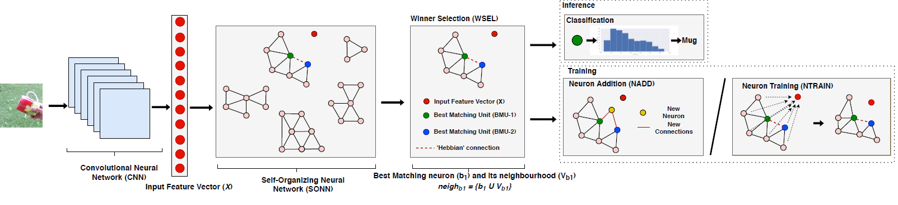
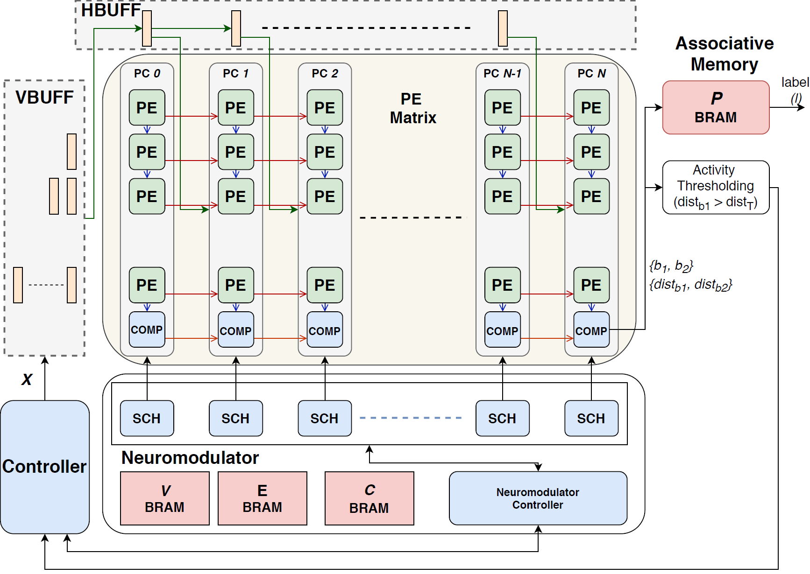
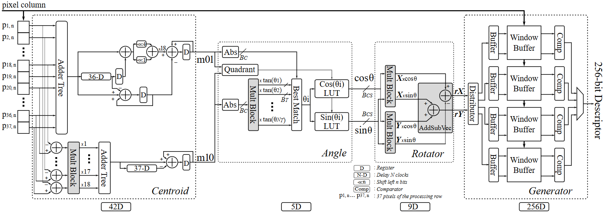

Our Projects


Motivation
The increasing commercial interest in AI chips bears a strong indication that specialized hardware will play an essential role in the successful adoption of AI in mainstream embedded applications where fast response and energy efficiency are a concern. Field Programmable Gate Arrays (FPGAs), which enable the hardware to be reprogrammed and customized for AI models, are now adopted by major chip manufacturers and AI service providers due to its versatility and affordability. However, modern FPGA based SoCs are equipped with heterogeneous processing elements, which makes design exploration a complex task.
Given the economic importance of domain-specific architectures, our research aims to dramatically increase the design productivity through innovative design methodologies that rely on hardware-efficient Intellectual Property (IP) cores in order to expedite algorithm-to-architecture mapping on the heterogenous processing elements of FPGA based SoCs.
The following are some of our projects in this area:
Lifelong Deep Learning Architecture
Conventional deep learning models are trained once and deployed. However, models deployed in agents operating in dynamic environments need to constantly acquire new knowledge, while preventing catastrophic forgetting of previous knowledge. This ability is commonly referred to as lifelong learning.
We proposed a FPGA based architecture for a Self-Organization Neural Network SONN), that in combination with a Convolutional Neural Network (CNN) can perform class-incremental lifelong learning for object classification. The proposed SONN architecture is capable of performing unsupervised learning on input features from the CNN by dynamically growing neurons and connections. In order to meet the tight constraints of edge computing, we introduced efficient scheduling methods to maximize resource reuse and parallelism, as well as approximate computing strategies.


Publications
- Duvindu Piyasena, Miyuru Thathsara, Sathursan Kanagarajah, Siew Kei Lam and Meiqing Wu, “Dynamically Growing Neural Network Architecture for Lifelong Deep Learning on the Edge”, Field Programmable Logic and Applications (FPL), August 2020 [PDF]
- Heechul Bae, Eoin Brophy, Rosa H.M. Chan, Baoquan Chen, Fan Feng, Gabriele Graffieti, Vidit Goel, Xinyue Hao, Hyonyoung Han, Sathursan Kanagarajah, Somesh Kumar, Siew-Kei Lam, Tin Lun Lam, Chuanlin Lan, Qi Liu, Vincenzo Lomonaco, Liang Ma, Davide Maltoni, German I. Parisi, Lorenzo Pellegrini, Duvindu Piyasena, Shiliang Pu, Qi She, Debdoot Sheet, Soonyong Song, Youngsung Son, Zhengwei Wang, Tomas E. Ward, Jianwen Wu, Meiqing Wu, Di Xie, Yangsheng Xu, Lin Yang, Qihan Yang, Qiaoyong Zhong, and Liguang Zhou, “IROS 2019 Lifelong Robotic Vision: Object Recognition Challenge”, IEEE Robotics & Automation Magazine, Vol. 27, No. 2, June 2020, pp. 11-16 [PDF]
- Duvindu Piyasena, Sathursan Kanagarajah, Siew-Kei Lam and Meiqing Wu, “Lifelong Learning with Regularization and Data Augmentation”, IEEE/RSJ International Conference on Intelligent Robots and Systems, November 2019 [Macau, China] [PDF]
- Duvindu Piyasena, Rukshan Wickramasinghe, Debdeep Paul, Siew Kei Lam and Meiqing Wu, “Reducing Dynamic Power in Streaming CNN Hardware Accelerators by Exploiting Computational Redundancies”, Field Programmable Logic and Applications (FPL), September 2019 [Barcelona, Spain] [PDF]
- Duvindu Piyasena, Rukshan Wickramasinghe, Debdeep Paul, Siew Kei Lam and Meiqing Wu, “Lowering Dynamic Power of a Stream-based CNN Hardware Accelerator”, IEEE 21st International Workshop on Multimedia Signal Processing (MMSP), September 2019 [Kuala Lumpur, Malaysia] [PDF]
Hardware Accelerator for Visual SLAM
The pervasive adoption of cameras in various cutting-edge technologies today such as self-driving cars, robotics, virtual reality and augmented reality, have elevated the need for computer vision algorithms that are robust and can deliver high-speed solutions. A core application in these technologies is visual odometry or Simultaneous Localization And Mapping (SLAM), which enables the system to localize itself in unknown environments. Feature matching plays a central role in this application to estimate the motion trajectory from one frame to the next.
We proposed a deep-pipelined stream processing architecture that is capable of extracting rBRIEF (rotation-aware Binary Robust Independent Elementary Features) from high-throughput video frames. To achieve high processing rate and low complexity hardware, the proposed architecture incorporates an enhanced moving summation strategy to calculate the key-points’ patch moments and employs approximate computations to achieve patch rotation. Multiplier-less circuitry is introduced throughout the architecture to avoid the use of costly multipliers.

Publications
- Siew-Kei Lam, Teck Chuan Lim, Meiqing Wu, Bin Cao, and Bhavan A. Jasani, “Data-path Unrolling with Logic Folding for Area-Time Efficient FPGA-based FAST Corner Detector”, Journal of Real-Time Image Processing, Vol. 16, No. 6, December 2019, pp 2147–2158 [PDF]
- Thinh Hung Pham, Phong Tran, Siew-Kei Lam, “High-Throughput and Area-Optimized Architecture for rBRIEF Feature Extraction”, IEEE Transactions on Very Large Scale Integration System, Vol. 27, No. 4, April 2019, pp. 747-756 [PDF]
- Siew-Kei Lam, Guiyuan Jiang, Meiqing Wu, Bin Cao, “Area-Time Efficient Streaming Architecture for FAST and BRIEF Detector”, IEEE Transactions on Circuits and Systems II, Vol. 66, No. 2, February 2019, pp. 282-286 [PDF]
- Bhavan A. Jasani, Siew-Kei Lam, Pramod K. Meher, and Meiqing Wu, “Threshold-Guided Design and Optimization for Harris Corner Detector Architecture”, IEEE Transactions on Circuits and Systems for Video Technology, Vol. 28, No. 12, December 2018, pp. 3516-3526 [PDF]
- Phong Tran, Thinh Hung Pham, Siew-Kei Lam, Meiqing Wu, and Bhavan A. Jasani, “Stream-based ORB Feature Extractor with Dynamic Power Optimization”, International Conference on Field-Programmable Technology (ICFPT), December 2018 [Okinawa, Japan] [PDF]
- Siew-Kei Lam, Teck Chuan Lim, Meiqing Wu, Bin Cao, Bhavan A. Jasani, “Area-Time Efficient FAST Corner Detector using Data-path Transposition”, IEEE Transactions on Circuits and Systems II, Vol. 65, No. 9, September 2018, pp. 1224-1228 [PDF]
- Siew-Kei Lam, Rakesh Kumar Bijarniya, and Meiqing Wu, “Lowering Dynamic Power in Stream-based Harris Corner Detection Architecture”, International Conference on Field-Programmable Technology (ICFPT), December 2017 [Melbourne, Australia] [PDF]